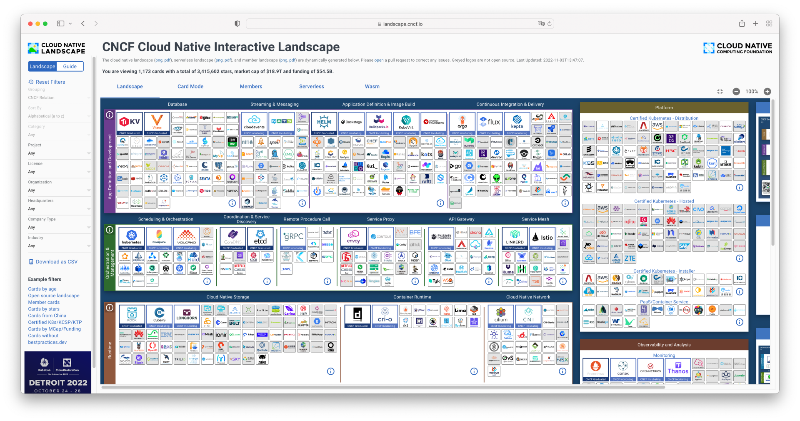
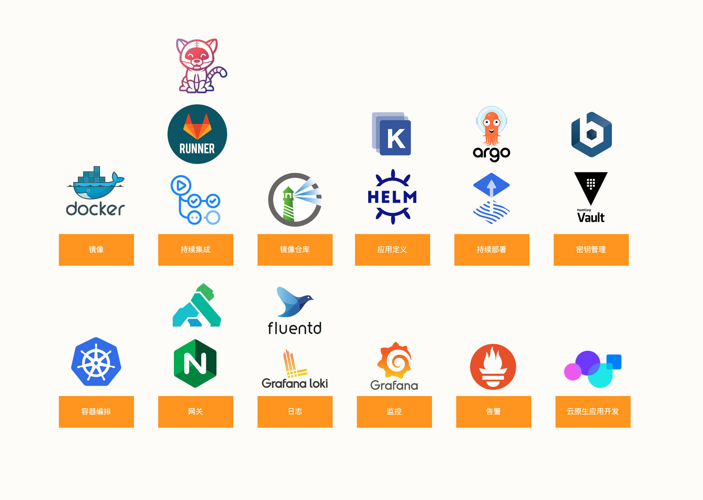
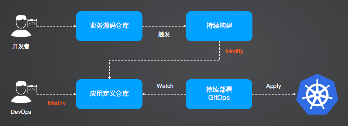

云原生
正如 CNCF 给出的云原生全景图呈现给我们的，云原生技术包括数十个垂直领域，每一个垂直领域都有数十款工具可供选择，这对于刚刚燃起学习热情的同学来说无疑是一个打击。 我们不知道该从哪里学起。

作为云原生架构师或者 SRE，在云原生工程实践中，为了构建研发和发布工作流，你不得不在下面这些垂直领域持续深耕，并掌握一系列技术和工具：

要入门云原生领域，也许从单项技术着手并不是很好的一个切入点。我们应该站在整体工程实践的视角去学习，快速得到工程化的输出反馈。
在我看来，我们使用的大部分的云原生技术，最终都可以组合起来，演进成为一个标准的工程实践方法：GitOps。从知识体系上来说，GitOps 背后的技术几乎覆盖了“成为优秀的架构师”的所有能力 。 我们不再需要从头学习架构上的细节，这对传统的架构领域来说是一种降维打击。
GitOps 的核心思想是，通过 Git 以声明式的方式来定义环境和基础设施。
现在请你试想一下这样的系统架构：当我提交代码后，环境也随之变更，同样地，当我回滚代码时，环境也随之回滚。业务启动时会自动以多副本负载均衡的方式运行，有效避免了单点故障。当业务处于流量高低峰时，会自动进行扩容和缩容操作；当业务宕机时会自动识别并重启；当请求异常比例超过阈值时会自动发出告警。
我想，这一定是你理想的业务架构。但是对于传统的技术架构来说，实现以上任意一点可能都是有难度的。而 GitOps 工程实践作为云原生技术的集大成者，可以帮助我们一次性实现上面提到的所有架构能力。构建高可用、高并发、自动自愈的弹性应用架构不再是大厂专属了！
诺贝尔奖得主，心理学家 Daniel Kahneman，经过研究发现，人对事物体验的判断由两个因素决定：高峰时与结束时的感觉，这就是峰终定律（Peak-End Rule）。
什么是 GitOps
- 使用 Git 仓库作为应用状态唯一可信来源（IaC 代码、应用定义：Manifest、Helm、Kustomize）
- 一旦 Git 仓库产生变更，随即执行同步和 Diff 检查
- Diff 指的是对比可信源的期望状态与当前真实状态
- 应用可信源的期望状态

GitOps 工具
ArgoCD 和 FluxCD 对比
ArgoCD 和 FluxCD 各有自己的特点。首先，FluxCD 整体架构比较简单、轻量，也比较容易维护。不过，FluxCD 并没有像 ArgoCD 一样提供 Dashboard，对于喜欢通过界面操作的开发者来说，ArgoCD 是更好的选择。
其次，在单实例的条件下，FluxCD 缺少多租户和多集群的支持。在中大型团队中，ArgoCD 是一个更好的选择。当然，FluxCD 多实例的部署方式虽然能间接实现多租户和多集群的支持，但在管理上也带来了更高的复杂度。
然后，在 GitOps 部署能力的支持上，两者并没有太大的差异。它们都只是部署工具，无法帮助你自动构建镜像，并且都符合 GitOps 所要求的几大原则。
最后，如果你希望通过二次开发的方法构建自己的 GitOps 工具，同时根据自己的组织实现多租户，那么 FluxCD 可能是更好的选择。